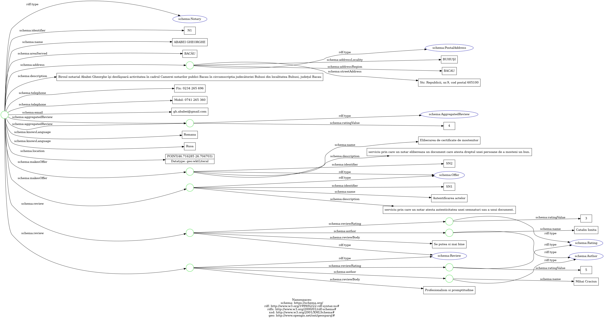

* Authors have equal contributions and are just sorted in alphabetical order.
Abstract
Using the official data regarding public notary entities [RO] and authorized translators + interpreters [RO], develop a smart modular
Web system capable to provide support for locating offices and services – such as notarized documents: acknowledgments, oaths/affirmations, copy certification, signature witnessing, others legal procedures – according to user preferences, geographical places, fees, restrictions, and other aspects (e.g., support for foreign citizens)
– consider also legal paper provenance. Via SPARQL endpoints, the application will offer useful maps – see also Place schema.org concept – and additional knowledge (contact info, timetable, reviews, related points of interest) about each notary office.
Introduction
NoW as known as Notary Knowledge Web Tool is a Web application following the Sematic Web principles,
developed as part the evaluation process for theWeb Application Development1 course.
Goals and Techical Requirements
As mentioned previously the project aims to offer a smart tool with the following goals in mind:
Visualize - data about public entities (notaries, translators, etc) offering services of legal nature in the near vicinity of the user's actual location.
The nature of the legal services the entity is able to perform should also be visible to the user using visual cues.
Filter - based on various criterias such as (the nearest point of interest, the prefered services, etc).
Model knowledge - based on the data that is currently available, every data aspect of the application should be annotated with schema.org concept such as to be easily crawled by intelligent agents.
Some of the most important requirements are as following:
The application should put emphasis on the ease of access, should be available on both mobile and desktop platforms.
To follow the Linked Data recommended practices for publishing structured data on the Web, in
order for the data to be processable by Semantic Web tools.
To use a knowledge graph/base and provide a SPARQL endpoint. The project is using data stored in
an RDF triple store using a set of frameworks (described in technologies section) and is
providing an endpoint at which other SPARQL clients can make queries and manipulate data.
To use various conceptual models such as schema.org5
To provide support for locating offices and services - such as notarized documents: acknowledgments, oaths/affirmations, copy certification, signature witnessing, others legal procedures
– according to user preferences, geographical places, fees, restrictions, and other aspects
To consider using legal paper provenance5 for enforcing the trust in the data, legal in nature, that is being exposed to the enduser.
Implementation
The Web Application as required was developed according to the actual popular and in-use software engineering practices (e.g.,
documentation, code modularity, testing, microservice oriented architecture, etc.).
Considering the varied functionality the project has to offer, a technology stack to match is required.
The technologies that were used to ensure that the services offered by NoW are running in a scalable and available manner are as follows:
Front-end
Technologies used on the Front-end of the application, are as follows:
Angular - Angular (also referred to as "Angular 2+") is a TypeScript-based,
free and open-source web application framework led by the Angular Team at Google and by a community of individuals and corporations.
Back-end
Technologies used on the Backend of the application, are as follows:
NestJS - Nest.JS is a framework that helps build Node. JS server-side applications.
The Nest framework is built using TypeScript which allows developers to build highly scalable and testable applications
GraphDB - GraphDB is an enterprise ready Semantic Graph Database, compliant with W3C Standards. Semantic graph databases (also called RDF triplestores) provide the core infrastructure for solutions where modelling agility, data integration,
relationship exploration and cross-enterprise data publishing and consumption are important.
MongoDB Atlas - MongoDB is a source-available cross-platform document-oriented database program. Classified as a NoSQL database program, MongoDB uses JSON-like documents with optional schemas. MongoDB is developed by MongoDB Inc. and licensed under the Server Side Public License (SSPL) which is deemed non-free by several distributions.
Docker - Docker is a platform designed to help developers build, share, and run modern applications. We handle the tedious setup, so you can focus on the code.
Github Actions - Automate, customize, and execute your software development workflows right in your repository with GitHub Actions. You can discover, create, and share actions to perform any job you'd like, including CI/CD, and combine actions in a completely customized workflow.
Architecture
Considering the goals and requirements mentioned in the previous chapters on this document the Web Application has to be built ensuring a high functionality and availability. Software Engineering principles such as high cohesion and low coupling were core principles when considering the solution.
The Front-end Architecture
The Front-end application was developed using the Angular framework and consists of a Singe-Page Application8
.The Front-end application aims to offer an attractive and easy to use interface for the users in order to access
the functionality of the backend services in an intuitive manner and non-convoluted manner.
The application is a Single-Page Application
organized in a set of pages with well defined functionality:
Login page serves as an a way for the user to declare their identity,
the user is requested to authenticate although the application can be used without the necessity of an active account,
actions such as rating a public entity is only available under the protection of requested authentication.
.
Register page serves as an a way for the user to register their identity
the user is requested to authenticate, although the application can be used without the necessity of an active account,
actions such as rating a public entity is only available under the protection of requested authentication.
.
Main page serves as an a entry point for the user, the application uses a map representation and marks the current location of each public entity
with a specific associated marker, from the main page the user has the possibility to filter the available open data about the notaries or translators in the near vicinity.
.
The Back-end Architecture
The back-end project, the core of the project, aims to be microservice-oriented, well-organised in various microservices and subsequently modules and libraries that have
througly defined boundaries and functionality, enabling high cohesion and low coupling, allowing the development team
to reuse components as needed, without duplicating code, while maintaining an easy-to-upgrade
code-base. Also the microservice based arhitecture offers improved scalalability, fault isolation and the simplicity of deployment.
A overview of the arhitecture of the proposed solution, using the C4 Model9 Level 2 :
C4 Model - Level 2 Container Diagram
From the C2 level diagram above it can be observer how multiple microservices are compose and offer aggregated functionality.
Microservices
The split of functionality between different microservices:
Client API Microservice is a REST Web API which provides authentication and registration functionality.
The user is is authenticated using a JWT token that stores encrypted information about the current requesting user.
Considering that the user data consists of data that is private in nature the credentials are stored in MongoDB.
NoW API Microservice is a REST Web API which provides a open endpoint for requesting SparQL queries but not limited to,
this endpoint is actively used by the rating system to enhance the RDF data with ratings and comments generated by the user.
NoW Email Daemon is a daemon type service which provides the functionality of sending a email when requested by another microservices.
The daemon actively listens to a message queue and responds to events. The daemon is built with extendability in mind, it can send emails to a certain
recipient when events are generated, for instance the daemon will respond and send a welcome email when a new user registers successfully.
Crawler component is a Python based application which provides crawling functionalities over sources of data of interest. As a consequence of the scarcity
of the widely available data with public notary and translators entities, data that is available from government sources has to be augment with correlated informations available through common search engines.
The crawler component will export the data as an open non-RDF format such as JSON which is the converted and uploaded into the GraphDB instance.
Crawler Component Workflow
The resulted RDF construct after the enrichment process having as a starting point the crawl process.

RDF construct obtained as a result of crawling
Plugins
The external services that are not part of NoW Project but are vital to its development and deployment process:
GraphDB which is used for storing RDF data before and after it is being process by other services.
Github Actions (Semantic-Release) which is used for running workflows and generating associated microservices images for each incrementary development step.
Images are being generated can then be deployed with ease in the phase of deployment.
Data
The starting point of the project was the official data regarding several legal service providers
like notaries and legal translators provided by data.gov.ro and creating
a custom model represended by a graph schema over that.
The information required in order to solve the task is found in two particular csv files provided by
the governmental website notaries and
legal translators. As the fields
provided were not sufficient in order to provide a good experience for the end user we had to find a solution
to enrich the data with more helpful fields using different methods like crawling different websites as
https://notariatpublic.com/notari-iasi-judet
and using Geo Location API in order to locate the service providers based on their address. Over all that
information gathered another layer was added containing offered services in order to give the user a better
way to filter based on its needs.
Modeling
The developed Web application models its managed data into RDF-based knowledge models using
established vocabularies and basic ontologies. This modeling approach enables integration
with other datasets, allows for SPARQL query language utilization, and facilitates advanced
inferencing using both internal and external data.
The Web Application utilizes RDF schemas to define entities and their semantic connections.
These entities are stored in separate graphs in a repository managed by GraphDB and are
organized with ontologies that model the semantic representation of the objects involved
(notaries and legal translators).
In order to express and model the data in RDF triples the following open vocabularies were
used:
The most used vocabulary in our context was the Schema.org
one as it provides a lot of usefull classes and properties that were use in order to express
the data that was colected.
Notary
The notary concept was described using several Schema.org classes and
properties.
The notaries are described as a type of schema:Notary class, thus inheriting
its properties which are later described and how they were used
Notary Properties
The properties used in order to define the notary class are the following:
That being said an instance of a notary, after being processed and converted in RDF triples could look like this in the turtle format
_:n3-0 a schema:Notary;
schema:identifier "N1";
schema:name "ABABEI GHEORGHE";
schema:areaServed "BACĂU";
schema:address _:n3-1.
_:n3-1 a schema:PostalAddress;
schema:addressLocality "BUHUŞI";
schema:addressRegion "BACAU";
schema:streetAddress "Str. Republicii, nr.9, cod postal 605100".
_:n3-0 schema:description "Biroul notarial Ababei Gheorghe îşi desfăşoară activitatea în cadrul Camerei notarilor publici Bacau în circumscriptia judecătoriei Buhusi din localitatea Buhusi, judeţul Bacau";
schema:telephone "Fix: 0234 265 696", "Mobil: 0741 265 360";
schema:email "gh.ababei@gmail.com";
schema:aggregatedReview _:n3-4;
schema:knowsLanguage "Romana", "Rusa";
schema:location "POINT(46.716285 26.704703)"^^geo:wktLiteral;
schema:makesOffer _:n3-2.
_:n3-2 a schema:Offer;
schema:identifier "SN1";
schema:name "Autentificarea actelor";
schema:description "serviciu prin care un notar atesta autenticitatea unei semnaturi sau a unui document.".
_:n3-0 schema:makesOffer _:n3-3.
_:n3-3 a schema:Offer;
schema:identifier "SN2";
schema:name "Eliberarea de certificate de mostenitor";
schema:description "serviciu prin care un notar elibereaza un document care atesta dreptul unei persoane de a mosteni un bun.".
_:n3-0 schema:aggregatedReview _:n3-4.
_:n3-4 a schema:AggregatedReview;
schema:ratingValue "4".
_:n3-0 schema:review _:n3-5.
_:n3-0 schema:review _:n3-6.
_:n3-5 a schema:Review;
schema:reviewBody "Profesionalism si promptitudine";
schema:reviewRating _:n3-7;
schema:author _:n3-8.
_:n3-6 a schema:Review;
schema:reviewBody "Se putea si mai bine";
schema:reviewRating _:n3-9;
schema:author _:n3-10.
_:n3-7 a schema:Rating;
schema:ratingValue "5".
_:n3-8 a schema:Author;
schema:name "Mihai Craciun".
_:n3-9 a schema:Rating;
schema:ratingValue "3".
_:n3-10 a schema:Author;
schema:name "Catalin Ionita".
Note that blank nodes were used in order to represent multiple entites of the same type like multiple reviews or provided services
Translator
The Translator collection, while similar to the Notary one have a few differences.
A key difference would be the fact that as there is no explicit class to describe translator
schema:LegalService was used instead which was the closest thing
in order to have some expression and a close connection to schema:Notary class.
Translator properties
The properties used in order to define the translator class are the following:
schema:review represents an instance of a review that the notary received
An entity of the translator family could be represented as follows:
_:n3-0 a schema:LegalService;
schema:identifier "T1";
schema:name "Aamoum Alina-Nicoleta";
schema:address _:n3-1.
_:n3-1 schema:addressLocality "PLOIEŞTI";
schema:addressRegion "BUZAU";
schema:streetAddress "Buzău, Buzău, Romania".
_:n3-0 schema:leiCode "5880";
schema:telephone "212667952892";
schema:aggregatedReview _:n3-2.
_:n3-2 schema:ratingValue "0".
_:n3-0 schema:knowsLanguage "Franceza", "Rusa", "Romana";
schema:location "POINT(45.149006 26.830656)"^^geo:wktLiteral;
schema:makesOffer _:n3-3.
_:n3-3 schema:identifier "ST1";
schema:name "Traducere de documente";
schema:description "serviciu prin care un translator traduce documente din sau in limba dorita.".
_:n3-0 schema:makesOffer _:n3-4.
_:n3-4 schema:identifier "ST2";
schema:name "Traducere legalizata";
schema:description "serviciu prin care un translator traduce documente si obtine legalizarea traducerii de la autoritatile competente.".
SPARQL queries and updates
Retrieving the notaries
The following SPARQL query retrieves all the notaries and their properties grouping and aggregating the properties which have multiple instances like schema:knowsLanguage.
There could also be applied multiple filters over the queries using
FILTER keyword like for instance over the notary name, county and known languages.
Example:
FILTER(STRSTARTS(LCASE(?addressRegion), "IASI"))
Retrieving the notaries ordered by distance from a point
The following SPARQL query retrieves all the notaries as above but this time computes the distance from a given point and
returns the list ordered by the distance from said point. This was made possible by using the geo:wktLiteral
to represent the location in the WTK point format and the geof:distance
function to compute the distance between 2 points.
There could also be applied multiple filters over the queries using
FILTER keyword like for instance over the notary name, county and known languages.
Example:
FILTER(STRSTARTS(LCASE(?addressRegion), "IASI"))
Adding a review to a notary
The following SPARQL update adds a review to a notary.
NoW application also does contain RDFa constructs embedded in the web view serializing the triplets
received from quering the database in the JSON-LD format which is understanded and processed by the
sniffers extentions like OpenLink Structured Data Sniffer
as it can be seen in the pictures below
OpenLink Structured Data Sniffer showing results inside the page pic. 1OpenLink Structured Data Sniffer showing results inside the page pic. 2OpenLink Structured Data Sniffer showing results inside the page pic. 3
Authors
The following people are actively participating at developing the project: